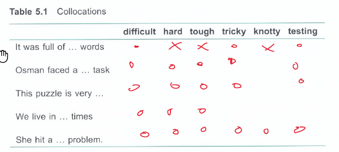
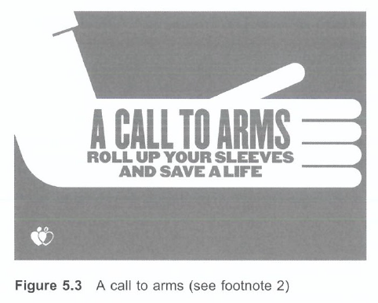

5 Words that go together (Idioms)
English relies on collocations (Collocation) words that naturally go together. This relationship is often not abritrary. An idioms is a string of words in which the words collocate strongly, often to a degree such that the meaning of the idiom is unrelated to the meaning of individual words.
The tendendy of words to keep company with each other is know as collocation.
She could not … from his clutches.
We can say that escape and clutches collocate.
Why some and not others
Collocational restrictions due to the sense (!) of the items involved.
I was chewing on a satellite.
The example is unlikely as satellites are not edible. Chew and satellite do not collocate due to the sense. To make a joke, one can let them collocate. Below is a table of words that collocate easily, some more than others:

knotty problem, knotty issue, knotty topic, knotty solve
Knotty is a versatile adjective to describe a tricky siutuation.
Collocation and subject matter
What is Hard water?
Is hard water ice? No. In the subject of chemisty and physics hard refers to the degree of minerals found in the water. This collocation is fixed and has specific meaning.
Idioms
It warms the cockles of the heart. Come a cropper. Cock a snook. Put a sock in it.
They are all well-defined idioms and the colloquial bond of the words is strong. It warms the cockles must go with heart. a cropper goes with come. a snook goes with cock, and so on. This bond is fixed and words cannot be replaced without the idiom losing its meaning.
Idioms are tightly linked words that act as a single unit. We just got there in the nick of … (time). It can only be time. Idioms are grammatically restricted and only allow (if at all) for limited modification as shown next.
It was one of those counting-your-chickens kind of mistake. (from "don't count your chicken until they're hatched")
He had a whole bag of chips on his shoulder. (from "to have a chip on one's schoulder")
Ambiguity and Idioms
Idioms lend themselves to create ambigious statements (statements that allow multiple interpretations).

Call to arms (to summon, unify), but here meaning to physically provide an arm for blood donation. Roll up your sleeves, meaning get ready for work. Here meaning to free your arm.